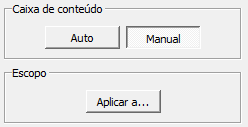

passo a passo: como fazer OCR de livros
resumo
Este guia amador mostra como digitalizar as páginas de um livro impresso, tratar as imagens resultantes da digitalização para melhorar sua qualidade e delas extrair, por meio da linguagem de programação Python, o texto da obra para um arquivo editável.O processo é feito através da técnica de reconhecimento óptico de caracteres (OCR), e para isso é necessário ter um scanner de mesa, alguns softwares específicos compatíveis com o sistema operacional Windows 11 e, claro, um bom livro fora de circulação que você deseja ler no (des)conforto da tela ou preservar em um arquivo digital.
O resultado de um OCR nunca será perfeito, já que é impossível reconhecer com alto grau de precisão o texto de obras publicadas em vários idiomas e em diversos formatos. O tempo e o uso também deixam suas marcas no suporte físico dos livros, dificultando o reconhecimento ideal de letras miúdas, papéis deteriorados e todo tipo de problemas próprios à indústria tipográfica.
Portanto, você ainda terá que editar, corrigir e cotejar o texto obtido por meio de OCR com o exemplar original para garantir sua consistência. Este script demonstra apenas como se pode automatizar o processo anterior à edição de texto para evitar meios ainda mais trabalhosos de extração, como a digitação manual.
ATENÇÃO: este script é destinado à preservação e recuperação de textos antigos de difícil acesso e/ou fora de circulação para fins pessoais de pesquisa. Seu intuito não é digitalizar livros impressos ainda em comércio, tampouco obter lucro com a replicação e reprodução de obras protegidas por direitos autorais e patrimoniais. Use-o com sabedoria.
requisitos
- Windows 11
- Um scanner (no caso, usamos o Epson Perfection V19)
- Tesseract
- Scan Tailor
- Python 3 com os pacotes pytesseract, pillow e python-docx
- O arquivo ocr-script.py, explicado ao final deste artigo
- A cópia de um livro antigo, preferencialmente de puro texto
primeiro passo: digitalizando o livro
Digitalizar manualmente todas as páginas de um livro por meio de um scanner é bastante trabalhoso. A depender do número de páginas, você provavelmente vai detonar a lombada do exemplar para conseguir obter uma imagem boa, já que o vidro do scanner é plano. Portanto, jamais use exemplares emprestados de amigos, bibliotecas ou coleções particulares; adquira uma cópia do livro para esse fim.
Antes de escanear, configure o aparelho para produzir imagens de qualidade. Aconselha-se para isso uma resolução de no mínimo 300 DPI (pontos por polegada) e o formato .tif para as imagens de saída, já que nele não há compressão de dados, ao contrário dos formatos png e jpg. Lembre-se, ainda, de escanear em modo preto e branco ou em escala de cinza, para melhor nitidez do texto.
A título de ilustração, digitalizamos apenas duas páginas abertas de um livro antigo (ou seja, quatro páginas de texto, ao todo) utilizando o software nativo do scanner Epson Perfection V19, chamado EPSON Scan.
Salvamos os dois arquivos tif em uma pasta:
Veja só o resultado, ainda sem nenhum tratamento:
A matéria-prima está pronta para ser processada.
segundo passo: tratando as imagens
Com o Scan Tailor, fazemos o pré-processamento das imagens obtidas na digitalização. Entre outras comodidades, o programa permite ao usuário detectar manualmente ou automaticamente a “mancha” de texto (espaço formado pelas linhas, dentro das margens da página) conforme a diagramação do livro em questão.
OBS.: apesar de o Python também ser altamente capaz de tratar imagens e planilhar seus dados técnicos (por meio dos pacotes opencv e matplotlib, por exemplo), optamos aqui por uma abordagem visualmente mais agradável ao usuário não acostumado com linguagens de programação, reservando o Python apenas à automatização do processo de OCR e salvamento de arquivos de texto. Caso você queira aprender a fazer tudo isso apenas por meio do Python, saiba que é possível. Veja as sugestões de leitura ao final deste artigo.
Ao abrir o Scan Tailor, você poderá criar um novo projeto ou abrir um já existente. Escolha a primeira opção:
Navegamos até a pasta onde se acham os dois arquivos tif e criamos uma outra para abrigar o resultado do tratamento. Assim não perdemos os originais:
Abaixo está a interface do programa. À esquerda temos o menu de tratamento, ao centro a visualização das imagens e à direita os arquivos originais, com páginas duplas:
O primeiro tratamento disponível, "Corrigir orientação", não será necessário neste caso, porque fizemos uma boa digitalização das páginas. Vamos então ao segundo tratamento: "Dividir páginas":
Percebe como a região cor-de-rosa está ocupando boa parte da página? Isso quer dizer que o programa não reconheceu a divisão das páginas automaticamente. Arrastamos o retângulo da região cor-de-rosa para a direita, em cada uma das duas imagens, para informar ao programa onde a página deve ser cortada. Elas devem ficar assim, metade azul, metade rosa:
Basta agora clicar na setinha para aplicar as mudanças:
Podemos pular o tratamento 3, "Alinhamento", porque fizemos uma boa digitalização. Vamos direto para "Selecione o conteúdo". Note como, no painel à direita, os dois arquivos tif já foram divididos em quatro arquivos diferentes, cada um contendo uma página do livro.
Certo, agora selecionamos o conteúdo, ou seja, a "mancha" de linhas impressas. Arrastamos o retângulo roxo para corresponder à área em que há texto impresso na página. Fica assim:
Aplicamos as mudanças clicando na setinha desse tratamento.

O quinto tratamento, "Margens", permite arrastarmos o retângulo branco para evitar que o programa picote uma parte do texto.
Chegamos à última etapa do tratamento, "Saída". Repetimos o mesmo processo de apertar a setinha. A aparência final das imagens é como na tela abaixo:
Se estiver tudo certo, aparecerá essa tela, dizendo que o programa está salvando as imagens tratadas:
Agora voltamos à pasta onde salvamos as imagens não tratadas e veremos uma pasta nova, contendo as imagens tratadas e recortadas.
Hora de instalar o OCR.
terceiro passo: instalando o OCR
Sem o Tesseract, este script não funcionaria — e talvez o OCR nem mesmo existisse. Essa técnica de reconhecimento de caracteres foi originalmente desenvolvida pela HP em 1985 e depois tocada pelo Google. Vem sendo usada, entre outras instituições, pela Biblioteca da Universidade de Mannheim na extração de texto de jornais históricos da Alemanha.
Para instalá-lo no Windows, baixe o executável compatível com as especificações do seu computador em github.com/UB-Mannheim/tesseract/wiki e instale-o, de preferência, no caminho indicado pelo assistente (em geral, C:\Arquivos de Programas\Tesseract-OCR\).
Lembre-se de incluir os aditivos para o português, senão o OCR virá todo bagunçado:

Para verificar se o Tesseract foi instalado corretamente, abra uma janela do terminal (não precisa ter medo). Pesquise por "Prompt" no Iniciar, ou aperte ctrl + r para abrir o comando "Executar", digite cmd e aperte enter.
Já no terminal, digite tesseract e aperte enter. O terminal deve mostrar o seguinte resultado:
Também é preciso garantir que o Tesseract seja incluído nas variáveis de ambientes do Windows. Assim ele poderá ser acessado pelo Python. Para fazer isso, pesquise no Iniciar pela seguinte tela: Editar as variáveis de ambiente do sistema. Clique em "Variáveis de ambiente" (também não é preciso ter medo).
Na metade inferior da tela, "Variáveis do sistema", selecione a linha Path e clique em "Editar":

Crie uma nova linha contendo o caminho da pasta onde você escolheu instalar o Tesseract. Deve ficar assim:
É um processo chato e delicado, mas vai valer a pena para automatizar o OCR do livro, que a depender do tamanho pode levar de meros segundos a até 2 minutos para ficar pronto.
quarto passo: configurando o python
Essa linguagem de programação é amplamente utilizada no treinamento de máquinas e em automação, daí a escolhermos como base para este script. Recomenda-se a versão mais atual (3.12), que pode ser baixada em python.org/downloads/windows/.
Para verificar se a instalação foi concluída com êxito, abra (de novo) uma janela do terminal, digite python e aperte enter. Deve aparecer:
Dentro do ambiente Python, há vários pacotes de aplicativos secundários que facilitam a vida do usuário.
Alguns dos que usaremos aqui já vêm embutidos no Python 3, então não precisa se preocupar com eles:
- os (gerenciador de caminhos);
- re (expressões regulares de limpeza de texto);
- time (cálculo de tempo de processamento).
Já outros precisam ser instalados manualmente:
- pytesseract (interface com o Tesseract);
- pillow (dependência do pytesseract);
- python-docx (interface com o Microsoft Word).
Para fazer isso de uma vez só, abra o terminal, digite a seguinte linha de comando e aperte a tecla enter:
pip install pytesseract pillow python-docx
OBS.: o comando pip é a abreviatura de Package Installer for Python, responsável pela instalação de pacotes de terceiros.
Para verificar se a instalação foi bem-sucedida, execute novamente a mesma linha de comando. O resultado deve ser o seguinte:
Isso significa que o Python tentou instalar de novo os pacotes (e suas dependências obrigatórias), mas já os encontrou no sistema.
Agora você está com tudo pronto para poder rodar o script, que vai ler as imagens obtidas na digitalização do livro, criar um arquivo contendo o caminho delas no computador, extrair o texto dessas imagens, armazená-lo em um arquivo simples, tratá-lo e gerar um documento Word editável.
quinto passo: entendendo o script
Antes de rodá-lo, vamos entender como ele funciona. A primeira linha estabelece a codificação geral dos arquivos para o formato UTF-8, que comporta os acentos do português brasileiro:
# -*- coding: utf-8 -*-
Depois, são importados os pacotes necessários, a começar pelos que instalamos manualmente no quarto passo do guia:
import pytesseract as pt
from PIL import Image
from docx import Document
from docx.shared import Pt, Cm
from docx.enum.text import WD_ALIGN_PARAGRAPH, WD_LINE_SPACING
Faltam ainda os pacotes embutidos na instalação do Python e que também iremos usar:
import os
import re
from time import monotonic
Ao fim do processo, receberemos a informação de quanto tempo o Python levou para concluir tudo. A linha seguinte inicia o processo de contagem:
contagem_inicial = monotonic()
Para começar o OCR propriamente dito, o script se certifica de que está no diretório correto (aquele que contém as imagens das quais queremos extrair o texto) e gera um arquivo txt contendo a lista de imagens com extensão tif nesse diretório:
diretorio = os.getcwd()
arquivos_tif = [f for f in os.listdir(diretorio) if f.endswith('.tif')]
with open('ocr-listagem.txt', 'w') as out:
out.write('\n'.join(str(i) for i in arquivos_tif))
Também é preciso informar o caminho em que o executável do Tesseract foi instalado. Fazemos isso com um comando fixo do pytesseract, chamado pytesseract.tesseract_cmd:
pt.pytesseract.tesseract_cmd = r"C:\Program Files\Tesseract-OCR\tesseract.exe"
OBS: aqui, informamos o caminho de instalação do Tesseract no computador seguido do nome do arquivo executável, e não apenas o caminho da pasta onde foi instalado, como fizemos antes ao incluir o Tesserac nas variáveis de ambiente do Windows.
Agora é a vez de aplicar o OCR nas imagens contidas no diretório e salvar o resultado em um arquivo txt contendo o texto bruto. Esse texto ainda é muito cru, e traz todas as quebras de linha do original, incluindo linhas terminadas em hífen:
listagem = os.path.join(diretorio, 'ocr-listagem.txt')
texto = pt.image_to_string(listagem, lang='por')
O script então converte para bytes o texto resultante do OCR (na linguagem Python, uma string) e o codifica novamente no formato unicode UTF-8 a fim de evitar erros de compatibilidade:
texto_bytes = texto.encode('utf-8').decode('utf-8').replace("\n\n", "\t")
OBS.: o método replace aqui substitui ocorrências de duas linhas em branco (o \n\n do código) por um caractere de tabulação (\t), que será por sua vez substituído depois. Fazemos isso para o Python saber que essas tabulações indicam o começo de um novo parágrafo no Word.
Na sequência, definimos uma função que pega um mapa de regras de substituição no texto resultante do OCR (por ex.: quebras de linha manuais, caracteres especiais de controle do Python, hifenização em fim de linha etc.):
def limpeza(rules, data: str) -> str:
ret = data
for pattern, repl in rules:
ret = re.sub(pattern, repl, ret)
return ret
REGRAS = [
(r'(\x0c)+', r''),
(r'[-]\n', r''),
(r'\n', r' '),
(r'\t', r'\t\n\t'),
]
OBS.: aqui, temos mais exemplos de regrinhas de substituição: \x0c equivale a um caractere de quebra forçada de linha, originário do OCR e que pode causar problemas de compatibilidade quando transposto para o Word; [-]\n representa um hífen em fim de linha, que será eliminado para recuperar a palavra na íntegra; e assim por diante.
Hora de criar um segundo arquivo txt com o resultado dessas substituições feitas no texto bruto:
with open('ocr-bruto.txt', 'w') as u:
print(limpeza(REGRAS, texto_bytes), file=u)
Esse arquivo txt é aberto para leitura no Python, de modo a fazermos o último tratamento no texto:
with open('ocr-bruto.txt', 'r') as f:
final = f.read()
O último tratamento é separar o texto do arquivo txt em parágrafos. Estes são delimitados pela sequência de caracteres especiais do Python: tabulação seguida de quebra manual de linha e uma nova tabulação. Essa sequência foi criada na etapa de substituições no texto, e agora marcará o lugar exato onde o texto deve ser dividido em parágrafos:
final_separado = re.split(r'\t\n\t', final)
Com o texto final pronto para ser transformado em um arquivo do Microsoft Word, acessamos o pacote python-docx, configurando a formatação desejada para o documento. Escolhemos a fonte Times New Roman, corpo 12, estilo normal, devido à sua compatibilidade com o português brasileiro e centenas de outros idiomas:
arquivo = Document()
style = arquivo.styles['Normal']
font = style.font
font.name = 'Times New Roman'
font.size = Pt(12)
O loop (ou laço) abaixo retorna cada parágrafo em separado e o atribui ao documento Word, com as respectivas formatações de parágrafo, criando recuos no começo de cada parágrafo final:
for x in final_separado:
parágrafo = arquivo.add_paragraph(x)
paragraph_format = parágrafo.paragraph_format
paragraph_format.alignment = WD_ALIGN_PARAGRAPH.JUSTIFY
parágrafo.paragraph_format.line_spacing_rule = WD_LINE_SPACING.ONE_POINT_FIVE
paragraph_format.space_after = 0
paragraph_format.space_before = 0
paragraph_format.first_line_indent = Cm(1.25)
Falta apenas salvar o resultado finalíssimo em um arquivo docx:
arquivo.save('ocr-limpo.docx')
Caso o processo tenha sido bem-sucedido, a janela do terminal de comando do Windows informa o tempo de execução do script. Ele obviamente vai variar, dependendo do tamanho do livro:
print(f"ÊXITO: todo o processo levou {monotonic() - start_time} segundos!")
Pronto! Na pasta em que o script foi rodado, deveremos ver três novos arquivos além do arquivo do script e das páginas recortadas pelo Scan Tailor:
O arquivo ocr-listagem.txt, convém lembrar, contém a listagem dos arquivos tif na pasta; ocr-bruto.txt é o resultado cru do OCR, contendo ainda muitos erros por substituir; e ocr-limpo.docx é o documento Word já com o texto limpo e organizado em parágrafos.
sexto passo: rodando o script
Clique aqui para baixar o script.
OBS.: fique à vontade para modificar o script e adaptá-lo às suas necessidades — desde que suas necessidades não sejam fazer da recuperação de livros antigos uma fonte de renda...
A maneira mais fácil de executá-lo é colocar o arquivo py na pasta onde se encontram as imagens da digitalização do livro e, na barra de endereços do Explorer, digitar cmd e apertar enter. Isso vai abrir uma janela do terminal de comando já na pasta correta. (Mas você também pode acessar a pasta apenas usando o terminal e o comando cd; veja mais sobre isso aqui.)
Depois é só digitar o seguinte comando, apertar enter e aguardar:
py ocr-script.py
Se tudo der certo, abra o arquivo ocr-limpo.docx. O estado do texto será mais ou menos parecido com o de nosso experimento realizado acima:
aqui imediatamente a senhora Acrivitza Ianulea,
Fêz menção de se afastar, mas a Princesinha o puxou pela manga, exclamando desesperada:
— Espere, Negoitza!
Para que encompridar ainda mais a nossa narrativa? Um conto, por mais belo que seja, não deve ser demasiado longo.
A jovem ficou curada, tão completamente curada que ninguém seria capaz de dizer que estivera doente; vestiu os seus mais belos trajes e foi dar um passeio de carro com a Princesa-Mãe. A frente, iam quatro imponentes palafreneiros e doze cavaleiros albaneses. Atrás, seguiam outros tantos, com os luxuosos mantos esvoaçando ao vento.
Encerrando o cortejo, seguia Manoli, que com a mão direita apertava o cinturão, de onde pendia o punhal, e com a esquerda ia torcendo os bigodes... O coração do Priíncipe transbordava de alegria, ao acompanhar com os olhos o coche que se afastava, quase voando...
Negoitza tornou-se hóspede da Córte. Dois dias depois, lembrando-se de que tinha de regular certos negócios no bairro dos “Comerciantes”, foi procurar a senhora Ianulea... Aquêles edifícios tão imponentes, que noutros tempos lhe haviam pertencido, tinham sido vendidos pelos credores... Pobrezinha! Abandonada pelo marido, vivia agora com o pai Hagi... Foi lá que Negoitza a encontrou, ficando impressionado com a sua beleza, a que dava ainda mais realce o
168 seu vestido totalmente preto, como convém a uma viúva desolada... Depois de lhe beijar a mão, disse-lhe Negoitza: |
-— Senhora, eu fiquei devendo a kyr Ilanulea cem marengos; infelizmente, só ontem é que tive conhecimento da sua desventura, e eis-me aqui para pagar a minha dívida... Receba, senhora, êste dinheiro que é seu!
A senhora lhe perguntou chorando, se sabia por acaso o que acontecera ao seu marido, pois sentia tantas saudades que via de não poder resistir; Negoitza disse não saber de nada; mas em sinal de reconhecimento, como o marido dela o ajudara num momento bem difícil, êle pedia à senhora que aceitasse como sua propriedade para sempre, sua vinha de Cutzitul-de-Argint.
E, dizendo isto, entregou-lhe ali mesmo o documento de doação, sancionado com o sélo da córte. Finalmente, decidido a se livrar duma vez para sempre do seu ofício de curandeiro, refletindo um pouco, acrescentou:
— Senhora, fique sabendo que se eu tive muita sorte, foi devido ao seu marido; em sua homenagem, portanto, e para honrar a sua memória, quero-lhe ensinar uma coisa que a poderá fazer sair facilmente das suas atuais dificuldades... Presteme muita atenção... Sempre que ouvir dizer que o diabo se apoderou de alguma mulher, casada ou solteira, de qualquer lugar ou raça que seja, dirija-se imediatamente para lá, pois essa mulher não será libertada enquanto a senhora não fôr expulsar dela o demônio... Deve
169 dizer à doente apenas estas palavras, como se estivesse encontrando o seu marido: “Então é aqui que estás escondido, meu Ianulica? E eu te procurando feita louca... fos-mu! parighoria tu kosmu!”
— Como é que o senhor conhece estas palavras? — perguntou a senhora, olhando-o de viés.
— Aprendi-as há muito tempo de um amigo... — respondeu Negoitza, sorrindo; depois acrescentou:
— Não dirá nem uma palavra mais... Depois, deverá abraçar a doente, sempre com o pensamento em kyr Ianulea; deverá fixar a doente bem no rosto, assim como está olhando agora para mim, beijando-a, depois com paixão e não deixando de lhe demonstrar o seu afeto, enquanto não a vir completamente curada. — Não é preciso dizer que, conforme as posses da família, seus trabalhos serão recompensados... Consegui me explicar?
— Perfeitamente.
— Agora só me resta desejar-lhe muita saúde e muita sorte, senhora!
bs
Negoitza regressou à cóôrte, onde permaneceu mais uns quatro ou cinco dias, cercado de tudo o que é bom e cumulado de tôdas as honras. Enquanto êle se sentava à mesa com SS. Altezas e com os membros mais importantes da nobreza e aristocratas do reino, debaixo das janelas cantavam e bailavam os músicos da córte contratados para divertir os cortesãos e populares. No
190 oitavo dia, Negoitza resolveu partir de Jiu e regressar para casa...
O Príncipe e a Princesa não somente o fizeram membro da nobreza, mas também lhe deram três saquinhos de sêda, contendo cada um mil marengos de ouro, e a Princesinha lhe ofereceu um anel com uma pedra preciosa grande que nem uma noz, e com grandes atenções o acompanharam até o fim da escadaria.
O Capitão pediu licença aos seus senhores para acompanhar Negoitza até sua casa. Durante tôda a viagem, o Capitão o tomou dia e noite aos seus cuidados como se fôsse um irmão; cantava e tocava para êle antigas canções turcas lá dos seus montes dis-
tantes... e tinha uma voz que era prazer escutá-lo. Além disso, cantava com muito sentimento. Negoitza apreciou muito essa
companhia que lhe fêz Manoli e, ao chegar em casa, sentiu-se na obrigação de convidar o Capitão como seu hóspede, pois fôra tão bom e simpático, quanto corajoso e valente... A noite, cearam juntos, regando tudo com um ótimo vinho de Dragasani, em seguida tomando café e fumando até altas horas; mas, fôsse pelo cansaço da viagem, fôsse pelo número de copos que passara bastante o normal, o Capitão, embora excepcionalmente forte, entregou-se repentinamente a um desabafo de sentimentos, chorando como uma mulher, e, caindo de joelhos diante do seu hóspede, assim falou:
-— Eu sou pobre, Bej-mu (meu príncipe), e nada tenho de precioso para lhe ofe-
171
São vários os problemas no texto: hifens no meio de palavras, números de página começando parágrafos, duplicação de travessões, dificuldade no reconhecimento de palavras estrangeiras e de algarismos... Além das características próprias de um texto antigo: o acento diferencial em palavras como "fêz" e "sêda", por exemplo.
Alguns deles podem ser evitados com um tratamento página a página no Scan Tailor (talvez retirando das margens a numeração das páginas), mas a maioria ainda levará muito tempo e machine learning para treinar uma inteligência artificial capaz de capturá-los e saber como corrigi-los. Não podemos contar com isso, e nem mesmo é desejável. A massa de texto, no entanto, está aí.
O resto é com você.
sugestões de leitura
Caso queira aprender mais sobre OCR e Python para fazer seu próprio script ou tirar dúvidas, recomendo a seguinte bibliografia:
- Joel Spolsky, The Absolute Minimum Every Software Developer Absolutely, Positively Must Know About Unicode and Character Sets (No Excuses!)
- The Sineth, Optical Character Recognition From Beginner to Expert Using Python | Tesseract - Complete Tutorial
- Tesseract OCR, Brief history e documentação de uso
- Bex Tuychiev, A Comprehensive Tutorial on Optical Character Recognition (OCR) in Python With Pytesseract
- Chris Woodford, Optical character recognition (OCR)
- Genilson Medeiros, Reconhecimento de caracteres em imagens com Tesseract-OCR e Python — Partes 1, 2 e 3; e Pré-processamento de imagens com Python — Partes 1 e 2
(C) 2024 by ofuabio